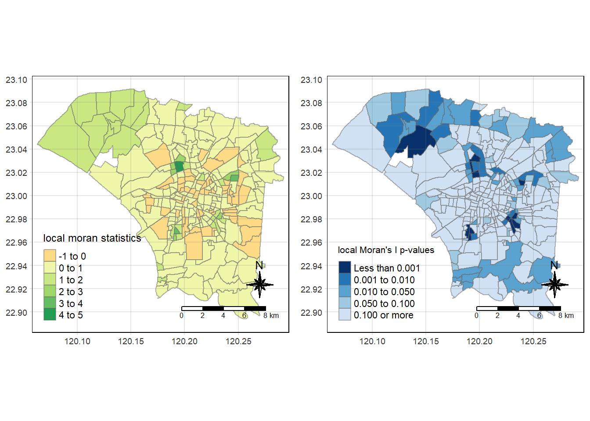

pacman::p_load(sf, sfdep, tmap, plotly, tidyverse,spdep)Take home assignment 2 - Glenn
1.0 The Task
The specific tasks of this take-home exercise are as follows:
-Using appropriate function of sf and tidyverse, preparing the following geospatial data layer: 1. a study area layer in sf polygon features. It must be at village level and confined to the D01, D02, D04, D06, D07, D08, D32 and D39 counties of Tainan City, Taiwan. 2. a dengue fever layer within the study area in sf point features. The dengue fever cases should be confined to epidemiology week 31-50, 2023. 3. a derived dengue fever layer in spacetime s3 class of sfdep. It should contain, among many other useful information, a data field showing number of dengue fever cases by village and by epidemiology week.
-Using the extracted data, perform global spatial autocorrelation analysis by using sfdep methods. -Using the extracted data, perform local spatial autocorrelation analysis by using sfdep methods. -Using the extracted data, perform emerging hotspot analysis by using sfdep methods. -Describe the spatial patterns revealed by the analysis above.
2.0 Importing the packages
3.0 Data Wrangling
3.1 Importing the data (Tainan)
tainan <- st_read(dsn = "data/geospatial",
layer = "TAINAN_VILLAGE") %>% st_transform(crs = 3824)Reading layer `TAINAN_VILLAGE' from data source
`C:\FieryCake\IS415-GAA\take_home_Ex\take_home_Ex_02\data\geospatial'
using driver `ESRI Shapefile'
Simple feature collection with 649 features and 10 fields
Geometry type: POLYGON
Dimension: XY
Bounding box: xmin: 120.0269 ymin: 22.88751 xmax: 120.6563 ymax: 23.41374
Geodetic CRS: TWD97plot(st_geometry(tainan))
Note
We plot the map of tainan and see that it is not the same as shown in class. This is because it includes all the regions and tainan. We have to filter the dataset accordingly in later code so that we get the correct area.
3.2 Importing the data (Dengue Daily)
dengue <- read_csv("data/aspatial/Dengue_Daily.csv")3.3 Making the list of towns required - Found in assignment brief
town_ids <- c("D01","D02","D04","D06","D07","D08","D32","D39")
Note
town_ids is a list of towns, as mentioned in the assignment brief on the website
3.3.1 Filtering tainan villages based on the above list
tainan_filtered_villages <- tainan %>%
filter(TOWNID %in% town_ids)
Note
We then filter our dataset to only include those towns that are provided in the list
tainan_filtered_villagesSimple feature collection with 258 features and 10 fields
Geometry type: POLYGON
Dimension: XY
Bounding box: xmin: 120.0627 ymin: 22.89401 xmax: 120.2925 ymax: 23.09144
Geodetic CRS: TWD97
First 10 features:
VILLCODE COUNTYNAME TOWNNAME VILLNAME VILLENG COUNTYID COUNTYCODE
1 67000350032 臺南市 安南區 青草里 Qingcao Vil. D 67000
2 67000270011 臺南市 仁德區 保安里 Bao'an Vil. D 67000
3 67000370005 臺南市 中西區 赤嵌里 Chihkan Vil. D 67000
4 67000330004 臺南市 南區 大成里 Dacheng Vil. D 67000
5 67000350028 臺南市 安南區 城北里 Chengbei Vil. D 67000
6 67000350030 臺南市 安南區 城南里 Chengnan Vil. D 67000
7 67000370009 臺南市 中西區 法華里 Fahua Vil. D 67000
8 67000350017 臺南市 安南區 海南里 Hainan Vil. D 67000
9 67000350049 臺南市 安南區 國安里 Guo'an Vil. D 67000
10 67000350018 臺南市 安南區 溪心里 Xixin Vil. D 67000
TOWNID TOWNCODE NOTE geometry
1 D06 67000350 <NA> POLYGON ((120.1176 23.08387...
2 D32 67000270 <NA> POLYGON ((120.2304 22.93544...
3 D08 67000370 <NA> POLYGON ((120.2012 22.99966...
4 D02 67000330 <NA> POLYGON ((120.1985 22.98147...
5 D06 67000350 <NA> POLYGON ((120.1292 23.06512...
6 D06 67000350 <NA> POLYGON ((120.1246 23.06904...
7 D08 67000370 <NA> POLYGON ((120.2094 22.98452...
8 D06 67000350 <NA> POLYGON ((120.175 23.02218,...
9 D06 67000350 <NA> POLYGON ((120.1866 23.02766...
10 D06 67000350 <NA> POLYGON ((120.1834 23.06086...
Note
We then plot out the map to see if the area is the same as shown in class
plot(st_geometry(tainan_filtered_villages))
Note
After filtering the dataset, we can see that the plot is indeed the same as the one shown in class.
3.4 Filtering dengue dataset to only fall between epidemiology week 31-50, 2023.
3.4.1 Changing first column to transmit date - easier
colnames(dengue)[1] <- "transmit_date"3.4.2 Changing column type to date
dengue$transmit_date <- as.Date(dengue$transmit_date)3.4.3 Filtering for week 31 - 50
Note
Epidemoiology weeks source- https://www.hpsc.ie/notifiablediseases/resources/epidemiologicalweeks/
dengue_filtered <- dengue %>% filter(between(transmit_date, as.Date('2023-07-30'), as.Date('2023-12-16')))
dengue_filtered$week_number <- week(dengue_filtered$transmit_date) - week('2023-07-30') + 1
head(dengue_filtered)# A tibble: 6 × 27
transmit_date 個案研判日 通報日 性別 年齡層 居住縣市 居住鄉鎮 居住村里
<date> <chr> <date> <chr> <chr> <chr> <chr> <chr>
1 2023-07-30 2023/07/31 2023-07-31 女 65-69 台南市 東區 忠孝里
2 2023-07-30 2023/07/31 2023-07-31 男 70+ 台南市 東區 德光里
3 2023-07-30 2023/07/31 2023-07-31 女 50-54 台南市 永康區 五王里
4 2023-07-30 2023/07/31 2023-07-31 女 15-19 台南市 永康區 二王里
5 2023-07-30 2023/07/31 2023-07-31 女 15-19 台南市 永康區 二王里
6 2023-07-30 2023/08/02 2023-08-02 男 50-54 台南市 永康區 安康里
# ℹ 19 more variables: 最小統計區 <chr>, 最小統計區中心點X <chr>,
# 最小統計區中心點Y <chr>, 一級統計區 <chr>, 二級統計區 <chr>,
# 感染縣市 <chr>, 感染鄉鎮 <chr>, 感染村里 <chr>, 是否境外移入 <chr>,
# 感染國家 <chr>, 確定病例數 <dbl>, 居住村里代碼 <chr>, 感染村里代碼 <chr>,
# 血清型 <chr>, 內政部居住縣市代碼 <chr>, 內政部居住鄉鎮代碼 <chr>,
# 內政部感染縣市代碼 <chr>, 內政部感染鄉鎮代碼 <chr>, week_number <dbl>3.4.4 Only keeping date transmit , lat and long and week_number
dengue_filtered <- select(dengue_filtered,1,10,11,27)
colnames(dengue_filtered)[2] <- "lng"
colnames(dengue_filtered)[3] <- "lat"st_crs(tainan_filtered_villages)Coordinate Reference System:
User input: EPSG:3824
wkt:
GEOGCRS["TWD97",
DATUM["Taiwan Datum 1997",
ELLIPSOID["GRS 1980",6378137,298.257222101,
LENGTHUNIT["metre",1]]],
PRIMEM["Greenwich",0,
ANGLEUNIT["degree",0.0174532925199433]],
CS[ellipsoidal,2],
AXIS["geodetic latitude (Lat)",north,
ORDER[1],
ANGLEUNIT["degree",0.0174532925199433]],
AXIS["geodetic longitude (Lon)",east,
ORDER[2],
ANGLEUNIT["degree",0.0174532925199433]],
USAGE[
SCOPE["Horizontal component of 3D system."],
AREA["Taiwan, Republic of China - onshore and offshore - Taiwan Island, Penghu (Pescadores) Islands."],
BBOX[17.36,114.32,26.96,123.61]],
ID["EPSG",3824]]
Note
We check the CRS of our dataset to see if it is correct. Correct CRS should be TWD97, not WSG84
3.5 Joining the data of filtered village and dengue
dengue_filtered# A tibble: 25,475 × 4
transmit_date lng lat week_number
<date> <chr> <chr> <dbl>
1 2023-07-30 120.220182286 22.976075790 1
2 2023-07-30 120.218036763 22.980068070 1
3 2023-07-30 120.235449178 23.013736726 1
4 2023-07-30 120.245579790 23.019322681 1
5 2023-07-30 120.246524983 23.018206041 1
6 2023-07-30 120.226597184 23.016947543 1
7 2023-07-30 120.459990679 23.599175697 1
8 2023-07-30 120.234949811 23.015998065 1
9 2023-07-30 120.234949811 23.015998065 1
10 2023-07-30 120.247723767 23.011129228 1
# ℹ 25,465 more rows3.5.1 Changing class from character to numeric
dengue_filtered$lng <- as.numeric(dengue_filtered$lng)
dengue_filtered$lat <- as.numeric(dengue_filtered$lat)3.5.2 Removing NA Values
dengue_filtered_complete <- na.omit(dengue_filtered)
Note
NA Values are introduced and we have to remove them
3.5.3 Transforming from decimal point to 3824
sf_object <- st_as_sf(dengue_filtered_complete, coords = c("lng", "lat"), crs = 4326) %>% st_transform(crs = 3824)
Note
Looking at the lat and long, we know that the numbers are in decimal point degree. We have to tell R that it is in crs 4326 and we have to change it to 3824
3.6 Finding the intercept
3.6.1 Making it a union so that finding points within this union is faster
merged_polygon <- st_union(tainan_filtered_villages)
Note
First i make a union of all the villages
Next We check the classes of the objects to know what we are working with as seen below
class(merged_polygon)[1] "sfc_POLYGON" "sfc" class(sf_object)[1] "sf" "tbl_df" "tbl" "data.frame"3.6.2 Intersection
denguePointsInTainan <- st_intersection(sf_object, merged_polygon)
Note
This one is to filter points found only in big polygon - it is faster than finding points in each polygon first
3.6.3 Finding points that fall within the different vilages, concetenating TOWNID and VILL ENG
town_dengue_intersections <- st_intersection(denguePointsInTainan, tainan_filtered_villages) %>%
mutate(town = paste0(as.character(TOWNID)," ",as.character(VILLENG)))
Note
Comment: Finding intersection of each point mapped to each town Will need to push it into a rds as it takes very long to compute
3.6.4 Write to RDS
write_rds(town_dengue_intersections,"data/rds/town_dengue_intersections.rds")
Note
We can see from the map here that most of the points are located in the center.
3.6.5 Read from RDS
town_dengue_intersections_rds <-read_rds("data/rds/town_dengue_intersections.rds")3.6.5 We only select the required fields which are Week number, town and transmit date
town_dengue_intersections_rds <- select(town_dengue_intersections_rds,1,2,13)3.7 Plots
plot(denguePointsInTainan)
tmap_mode("plot")
tm_shape(tainan_filtered_villages) +tm_polygons()+
tm_shape(denguePointsInTainan) +tm_dots()+tm_compass(type="8star",size=2)+tm_scale_bar()+tm_grid(alpha=0.2)3.8 Joining the 2 datasets together
df <- st_drop_geometry(town_dengue_intersections_rds)
df <- data.frame(df)
colnames(df)[3] <- "town"
tainan_filtered_villages <- tainan_filtered_villages %>%
mutate(town = paste0(as.character(TOWNID), " ", as.character(VILLENG)))
tainan_filtered_villages2<-select(tainan_filtered_villages,4,5,8,11,12)
test2 <- left_join(df,tainan_filtered_villages2)
Note
Steps: First i drop the geometric points as i already have town (comprises of TOWNID and village eng) - to seperate village level
Next, i mutate tainan_filtered_village (Map) to combine TownID and village eng too
Left join the 2 data sets and filter those columns that i want
Joining these 2 will result in date transmitted, town, and other details like geometry etc.
3.9 Calculating frequency
town_frequency <- test2 %>%
group_by(town) %>%
summarise(frequency = n())town_frequency2 <- test2 %>%
group_by(town,week_number) %>%
summarise(frequency = n())
Note
What this does is to calculate the number of “frequency”. Frequency count will count number of cases there is a transmit date. We calculate frequency for town_frequency dataset (group only by town) and town_frequency2 (group by town and week number). Group by town and week number for spatio temporal while group by town will be for Global Measures of Spatial Autocorrelation
3.9.2 Joining the data
test3 <- left_join(test2, town_frequency)
test4 <-left_join(test2,town_frequency2)
class(test3)[1] "data.frame"unique_data <- test3 %>%
distinct(town, .keep_all = TRUE)
test3_sf <- st_as_sf(unique_data)
test4_sf <- st_as_sf(test4)
Note
The end result of this join will be a dataset, each row indicating Week, town, number of transmit for that week for that town and the geometry
3.9.3 Visualising Regional Development Indicator
equal <- tm_shape(test3_sf) +
tm_fill("frequency",n=5, style = "equal") +
tm_borders(alpha = 0.5)+tm_compass(type="8star",size=2)+tm_scale_bar()+tm_grid(alpha=0.2) +
tm_layout(main.title = "Town Frequency")
quantile<- tm_shape(test3_sf) +
tm_fill("frequency",n=5, style = "quantile") +
tm_borders(alpha = 0.5)+tm_compass(type="8star",size=2)+tm_scale_bar()+tm_grid(alpha=0.2) +
tm_layout(main.title = "Town Frequency")
tmap_arrange(equal,
quantile,
asp=1,
ncol=2)
Note
Insight: What we can see here is that quantile frequency binning is more effective for visualizing frequency of transmit. Transmit frequency is very high in the ceter region of tainan
4 Global Measures of Spatial Autocorrelation
4.1 Computing wm_q and writing to rds
wm_q<-test3_sf %>% mutate(nb=st_contiguity(geometry), wt=st_weights(nb,style="W"),.before=1)write_rds(wm_q,"data/rds/wm_qs.rds")wm_q <-read_rds("data/rds/wm_qs.rds")4.2 Morans test
global_moran_test(wm_q$frequency,wm_q$nb, wm_q$wt)
Moran I test under randomisation
data: x
weights: listw
Moran I statistic standard deviate = 12.709, p-value < 2.2e-16
alternative hypothesis: greater
sample estimates:
Moran I statistic Expectation Variance
0.464548385 -0.003906250 0.001358733 set.seed(1234)
bperm = global_moran_perm(wm_q$frequency,
wm_q$nb,
wm_q$wt,
nsim=99)summary(bperm$res[1:99]) Min. 1st Qu. Median Mean 3rd Qu. Max.
-0.0790354 -0.0251184 -0.0040105 -0.0003563 0.0221268 0.0968728 bperm
Monte-Carlo simulation of Moran I
data: x
weights: listw
number of simulations + 1: 100
statistic = 0.46455, observed rank = 100, p-value < 2.2e-16
alternative hypothesis: two.sided4.2.2 Visualising Monte-carlo moran’s test
hist(bperm$res,
freq=TRUE,
breaks=5,
xlab="Simulated Moran's I")
abline(v=0,
col="red")
Note
Results of the moran’s test indicate that there is strong evidence to suggest that there is significant spatial autocorrelation the data. ( p values < 2.2e-16)
4.2.3 Geary C
Arguments are the same as Moran (x, nb, wt, nsim)
gperm = global_c_perm(wm_q$frequency,
wm_q$nb,
wm_q$wt,
nsim=99)summary(gperm$res[1:99]) Min. 1st Qu. Median Mean 3rd Qu. Max.
0.8631 0.9645 0.9993 0.9983 1.0283 1.0940 gperm
Monte-Carlo simulation of Geary C
data: x
weights: listw
number of simulations + 1: 100
statistic = 0.49851, observed rank = 1, p-value = 0.01
alternative hypothesis: greaterhist(gperm$res, freq=TRUE, breaks=20, xlab="Simulated Geary c")
abline(v=1, col="red")
Note
Results of the geary c test indicate that there is strong evidence to suggest that there is significant spatial autocorrelation the data. ( p values < 0.01) - Positive spatial autocorrelation.
4.2.4 Compute Moran correlogram
MI_corr <- sp.correlogram(wm_q$nb,
wm_q$frequency,
order=6,
method="I",
style="W")
plot(MI_corr)
Note
As we can see from the correlogram above, the higher the lag, the lower the Moran’s I value. This means that as the lag distance increases between different towns / villages, spatial autocorrelation weakens. Values are strongest when lag are at 1 or 2.
4.2.5 Compute geary C correlogram
GC_corr <- sp.correlogram(wm_q$nb,
wm_q$frequency,
order=6,
method="C",
style="W")
plot(GC_corr)
Note
When lags are at 3 onward, Geary C values are close to if not 1, meaning total randomness. From here, we can see that there is positive spatial autocorrelation in neighbouring areas, only up two 2 lags (2 jumps). This could indicate that frequency in dengue are in clusters.
5 Local Measures of Spatial Autocorrelation (Cluster and Outlier Analysis)
5.1 Local moran
localMoran = local_moran(wm_q$frequency,
wm_q$nb,
wm_q$wt,
nsim=99)head(localMoran) ii eii var_ii z_ii p_ii p_ii_sim
1 1.40416862 -0.079752792 0.61797960 1.88766026 0.059071574 0.02
2 0.75667997 -0.026953399 0.15370886 1.99877298 0.045632923 0.04
3 0.03486582 0.021287190 0.04930900 0.06114948 0.951240166 0.92
4 -0.21449583 0.024707315 0.08376675 -0.82647751 0.408533269 0.36
5 1.43266947 0.003819232 0.30843374 2.57279849 0.010087992 0.02
6 1.29563498 0.016778890 0.20389343 2.83217485 0.004623256 0.02
p_folded_sim skewness kurtosis mean median pysal
1 0.01 -0.86171486 1.15033353 Low-Low Low-Low Low-Low
2 0.02 -0.58973784 0.31508385 Low-Low Low-Low Low-Low
3 0.46 0.08794347 -0.56410065 High-High High-High High-High
4 0.18 -0.53872356 0.03141793 Low-High Low-High Low-High
5 0.01 -0.37730490 -0.03736517 Low-Low Low-Low Low-Low
6 0.01 -0.65510549 0.65735594 Low-Low Low-Low Low-Lowhead(unique_data[4]) VILLNAME
1 青草里
2 保安里
3 赤嵌里
4 大成里
5 城北里
6 城南里head(localMoran) ii eii var_ii z_ii p_ii p_ii_sim
1 1.40416862 -0.079752792 0.61797960 1.88766026 0.059071574 0.02
2 0.75667997 -0.026953399 0.15370886 1.99877298 0.045632923 0.04
3 0.03486582 0.021287190 0.04930900 0.06114948 0.951240166 0.92
4 -0.21449583 0.024707315 0.08376675 -0.82647751 0.408533269 0.36
5 1.43266947 0.003819232 0.30843374 2.57279849 0.010087992 0.02
6 1.29563498 0.016778890 0.20389343 2.83217485 0.004623256 0.02
p_folded_sim skewness kurtosis mean median pysal
1 0.01 -0.86171486 1.15033353 Low-Low Low-Low Low-Low
2 0.02 -0.58973784 0.31508385 Low-Low Low-Low Low-Low
3 0.46 0.08794347 -0.56410065 High-High High-High High-High
4 0.18 -0.53872356 0.03141793 Low-High Low-High Low-High
5 0.01 -0.37730490 -0.03736517 Low-Low Low-Low Low-Low
6 0.01 -0.65510549 0.65735594 Low-Low Low-Low Low-Low5.1.1 joining Local moran results and wm_q
localMoranData <- cbind(test3_sf[2], localMoran)
Note
After running local moran code, it can be binded to week number as the rows are the same at 257, no need to do any fancy join.
Code chunk below list the content of the local Moran matrix derived by using printCoefMat - followed slides (Chap10)
fips <-localMoranData$town
printCoefmat(data.frame(
localMoran,
row.names=localMoranData$town),
check.names=FALSE)5.1.2 Mapping local moran
localMI.map <- tm_shape(localMoranData) +
tm_fill(col = "ii",
style = "pretty",
title = "local moran statistics") +
tm_borders(alpha = 0.5)+tm_compass(type="8star",size=2)+tm_scale_bar()+tm_grid(alpha=0.2)
pvalue.map <- tm_shape(localMoranData) +
tm_fill(col = "p_ii",
breaks=c(-Inf, 0.001, 0.01, 0.05, 0.1, Inf),
palette="-Blues",
title = "local Moran's I p-values") +
tm_borders(alpha = 0.5)+tm_compass(type="8star",size=2)+tm_scale_bar()+tm_grid(alpha=0.2)
tmap_arrange(localMI.map, pvalue.map, asp=1, ncol=2)
Note
What does this tell us? For local moran statistics, those with values 1 and above, we can see that there is a strong spatial correlation in the data. Also, looking at the P values, it shows that our data is statistically significant to show that there is strong spatial correlation in those areas as well that are highlights in blue (from 0.001 onward)
6.0 Hot Spot and Cold Spot Area Analysis
Note
If we were to use the lab example, we have to compute centroid, cut off distance, adaptive weight matrix before we can calculate Gi. However, with the use of sfdep packages, we can now do that with less steps. Source - https://sfdep.josiahparry.com/articles/understanding-emerging-hotspots
6.1 Calculating the local Gi*
getis_nb <- test3_sf |>
mutate(
nb = include_self(st_contiguity(geometry)),
wt = st_weights(nb)
) gistar <- getis_nb |>
transmute(gi_star = local_gstar_perm(frequency, nb, wt, nsim = 199)) |>
tidyr::unnest(gi_star)
gistarSimple feature collection with 257 features and 8 fields
Geometry type: POLYGON
Dimension: XY
Bounding box: xmin: 120.0627 ymin: 22.89401 xmax: 120.2925 ymax: 23.09144
Geodetic CRS: TWD97
# A tibble: 257 × 9
gi_star e_gi var_gi p_value p_sim p_folded_sim skewness kurtosis
<dbl> <dbl> <dbl> <dbl> <dbl> <dbl> <dbl> <dbl>
1 -2.35 0.00292 0.00000177 -2.00 0.0451 0.01 0.005 0.522
2 -2.07 0.00354 0.00000152 -1.82 0.0687 0.02 0.01 0.798
3 0.365 0.00420 0.000000974 0.0693 0.945 0.93 0.465 0.334
4 0.363 0.00365 0.00000149 0.543 0.587 0.59 0.295 0.484
5 -2.65 0.00305 0.00000164 -2.20 0.0276 0.01 0.005 0.606
6 -3.17 0.00343 0.00000125 -2.88 0.00397 0.01 0.005 0.522
7 -1.25 0.00357 0.00000170 -1.07 0.284 0.24 0.12 0.819
8 -0.280 0.00374 0.000000753 -0.120 0.905 0.96 0.48 0.457
9 1.53 0.00430 0.00000163 1.18 0.236 0.28 0.14 0.651
10 -1.47 0.00376 0.00000100 -1.57 0.116 0.08 0.04 0.515
# ℹ 247 more rows
# ℹ 1 more variable: geometry <POLYGON [°]>6.2 Mapping local Gi*
gistar |>
mutate(cluster = case_when(
p_folded_sim > 0.05 ~ "Not Significant",
p_folded_sim <= 0.05 & gi_star < 0 ~ "Low",
p_folded_sim <= 0.05 & gi_star > 0 ~ "High"
)) |>
ggplot(aes(fill = cluster)) +
geom_sf(lwd = 0.2, color = "black") +
scale_fill_manual(values = c("High" = "red",
"Low" = "Blue",
"Not Significant" = "white")) +
theme_void()
Note
As expected, high clusters in the center region of tainan but weirdly, alot of low clusters, all on the outskirts.
7 Space time and space cubes
Source- https://sfdep.josiahparry.com/articles/spacetime-s3
7.1 Filtering data that we need
test4_sf <- test4_sf %>%
distinct(town,week_number, .keep_all = TRUE)
test5_sf <- test4_sf%>% select(week_number,town,frequency)7.2 Creating a space time object
spt <- as_spacetime(test5_sf, "town", "week_number")
activate(spt, "data")7.2.1 Spacetime Contexts
spt |>
activate("geometry") Simple feature collection with 257 features and 1 field
Geometry type: POLYGON
Dimension: XY
Bounding box: xmin: 120.0627 ymin: 22.89401 xmax: 120.2925 ymax: 23.09144
Geodetic CRS: TWD97
First 10 features:
town geometry
1 D06 Qingcao Vil. POLYGON ((120.1176 23.08387...
2 D32 Bao'an Vil. POLYGON ((120.2304 22.93544...
3 D08 Chihkan Vil. POLYGON ((120.2012 22.99966...
4 D02 Dacheng Vil. POLYGON ((120.1985 22.98147...
5 D06 Chengbei Vil. POLYGON ((120.1292 23.06512...
6 D06 Chengnan Vil. POLYGON ((120.1246 23.06904...
7 D08 Fahua Vil. POLYGON ((120.2094 22.98452...
8 D06 Hainan Vil. POLYGON ((120.175 23.02218,...
9 D06 Guo'an Vil. POLYGON ((120.1866 23.02766...
10 D06 Xixin Vil. POLYGON ((120.1834 23.06086...is_spacetime_cube(spt)[1] FALSEspt_complete <- complete_spacetime_cube(spt)7.3.2 Replacing all N.A values with 0
spt_complete <- complete_spacetime_cube(spt)
spt_complete <- spt_complete %>%
mutate(frequency = ifelse(is.na(frequency), 0, frequency))
Note
I kept running into an error and i think its due to NA values in the frequency column. After i replaced the NA values, i didnt not run into that error anymore
7.4 Emerging hotspot analysis
emerging_hotspot<- emerging_hotspot_analysis(spt_complete, "frequency", threshold = 0.05)head(emerging_hotspot) location tau p_value classification
1 D06 Qingcao Vil. 0.56842101 0.0005174875 oscilating hotspot
2 D32 Bao'an Vil. -0.08421052 0.6264962554 oscilating hotspot
3 D08 Chihkan Vil. -0.54736835 0.0008324861 oscilating hotspot
4 D02 Dacheng Vil. 0.03157894 0.8711314201 oscilating coldspot
5 D06 Chengbei Vil. -0.12631577 0.4555354118 oscilating coldspot
6 D06 Chengnan Vil. -0.19999999 0.2299690843 sporadic hotspot7.5 Emerging hotspot analysis
Note
Source - https://is415-gaa-tskam.netlify.app/in-class_ex/in-class_ex05/in-class_ex05-ehsa
ehsa <- emerging_hotspot_analysis(
x = spt_complete,
.var = "frequency",
k = 1,
nsim = 99
)write_rds(ehsa,"data/rds/ehsa.rds")ehsa <-read_rds("data/rds/ehsa.rds")7.5.1 Visualising the distribution of EHSA classes
ggplot(data = ehsa,
aes(x = classification)) +
geom_bar()
7.6 Visualising EHSA
dengue_ehsa <- test3_sf %>%
left_join(ehsa,
by = join_by(town == location))ehsa_sig <- dengue_ehsa %>%
filter(p_value < 0.05)
tmap_mode("plot")
tm_shape(dengue_ehsa) +
tm_polygons() +
tm_borders(alpha = 0.5) +
tm_shape(ehsa_sig) +
tm_fill("classification") +
tm_borders(alpha = 0.4)
Note
Looking at the map and the graph, majority are oscilating hotspot (highlighted in orange) and also, oscilating hotspots means there are the ones with more frequent spikes in numbers, meaning we should focus more of our attention there if we are allocating resources such as vaccines / manpower to those areas to treat dengue.
Note
Conclusion: Through this assignment, i am able to successfully identify patterns in the given area in tainan and also segment them accordingly to gather insights about clusters forming. I made use of Local and global spacial autocorrelation methods to find evidence of non-randomness in dengue spreads and finally space time cube method to see how through time, hotspots/ coldspots are formed